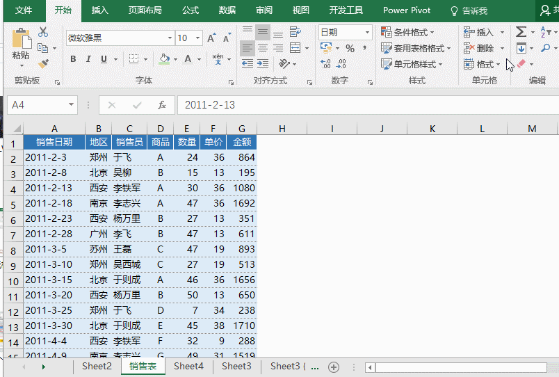
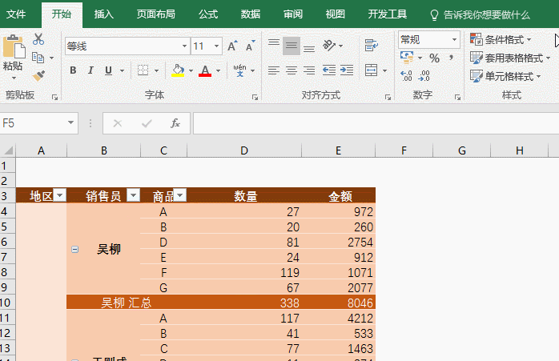
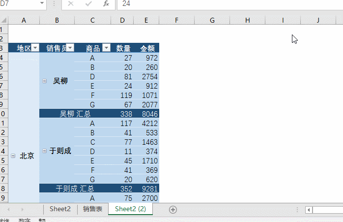
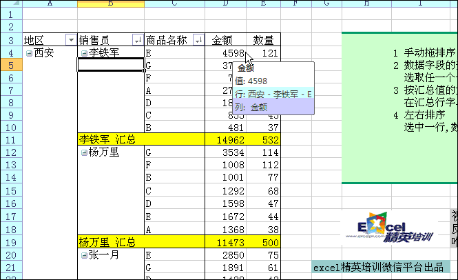
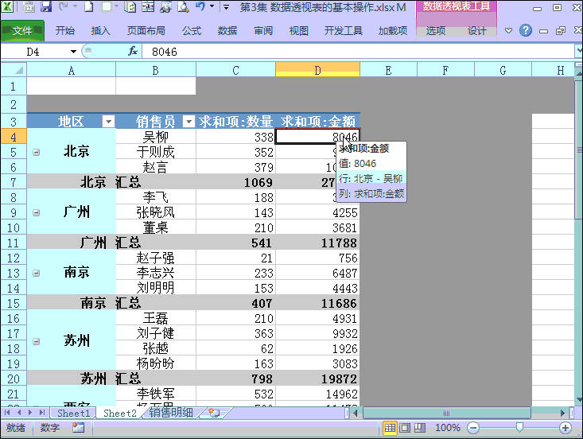
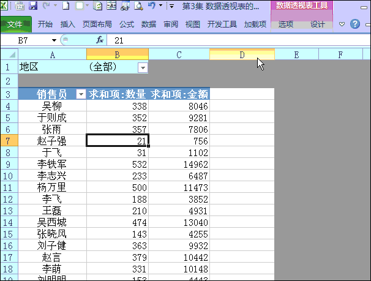

本文使用为WPS2019、Office2016
温馨提示: 为了更好的帮助大家了解教程，按照等级将教程进行了划分逐步，仅需查看不会部分！
简介
数据透视图/表(Data Pivot Figure)
可使用数据透视表汇总、分析、浏览和呈现汇总数据。数据透视图通过对数据透视表中的汇总数据添加可视化效果来对其进行补充，以便用户轻松查看比较、模式和趋势。借助数据透视表和数据透视图，用户可对企业中的关键数据做出明智决策。此外，还可以连接外部数据源（例如 SQL Server 表、SQL Server Analysis Services 多维数据集、Azure Marketplace、Office 数据连接 (.odc) 文件、XML 文件、Access 数据库和文本文件），创建数据透视表，或使用现有数据透视表创建新表。
关于数据透视表
数据透视表是一种可以快速汇总大量数据的交互式方法。可用于深入分析数值数据和回答有关数据的一些预料之外的问题。数据透视表专门针对以下用途设计：
以多种用户友好的方式查询大量数据。
分类汇总和聚合数值数据，按类别和子类别汇总数据，以及创建自定义计算和公式。
展开和折叠数据级别以重点关注结果，以及深入查看感兴趣的区域的汇总数据的详细信息。
可以通过将行移动到列或将列移动到行（也称为“透视”），查看源数据的不同汇总。
通过对最有用、最有趣的一组数据执行筛选、排序、分组和条件格式设置，可以重点关注所需信息。
提供简明、有吸引力并且带有批注的联机报表或打印报表。
基本操作
创建数据透视表
在Excel的“插入”选项卡中（WPS在“数据”选项卡中），选中对应数据表“点击数据透视表”，建立数据头数据透视表。默认先选择列（特征维度）一行后选择数值类维度多行，Excel会自动识别。

刷新所有数据透视表/更改数据源
默认情况下选择的数据后Excel和WPS的数据将不发生改变，除非进行手动更新，而手动更新数据信息，在更改数据源左边选项卡上有个“刷新”，点击选择便可以更新相关数据源信息。
对于数据源的修改，选中需要修改数据源对应生成的透视表，在“分析”选项卡中，更改数据源选项，当然选项卡的数据源支持多种数据格式，甚至可以关联其他Excel工作簿进行分析。

转换为普通表格
转换为普通表操作非常简单，就直接复制。最后根据自己的需求选择粘贴格式即可。

数据透视表排序
选择对应透视表的维度项已经默认和筛选过滤的功能，可以自行选择排序方式，Excel会自动根据先选择先排序后选后排的方式进行排序显示。
中英文默认都是按照字典顺序排列。

数据透视表插入公式
想要几个维度经过一定逻辑表达生成一个复合新维度，这个时候仅需插入字段，选择组合成表达式即可生成新数值型维度。

使用切片器
有时候我们针对一个或者几个特定分类变量进行观察影响程度，这个时候需要用到切片器帮助我们查看每一小细维度项数据的真实情况，利于对应数据下钻增强对应关注度。

<待续…>